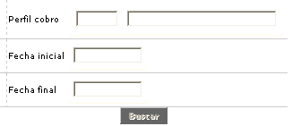
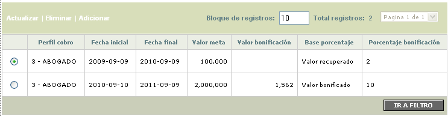
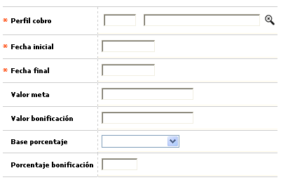
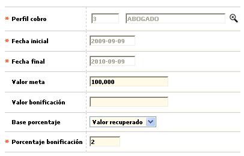

Metas |
Por medio de esta forma o pantalla la entidad define los objetivos o resultados esperados respecto de las gestiones de cobranza, acorde con sus políticas de recaudo; para ello posibilita relacionar, de una parte el tipo de obligación con el perfil de cobro, el periodo de tiempo de que se dispone y una desagregación de dichos objetivos junto con los correspondientes beneficios directos obtenidos por los agentes del nivel gestor, o indirectos por las labores desempeñadas por los agentes de niveles subordinados o dependientes.
Filtro: El formulario cuenta con un filtro inicial de búsqueda, necesario para la consulta de la información:

Perfil cobro
|
Despliega los registros parametrizados mediante la opción Actividades de cobro por perfil, que se desea o requiere parametrizar. |
Fecha inicial |
Campo en formato YYYY-MM-DD, en el que se registra la fecha a partir de la cual se define el periodo de tiempo disponible para alcanzar la meta de obligaciones exitosamente finalizadas. |
Fecha final |
Este campo en formato YYYY-MM-DD, permite registrar la fecha hasta la cual se define el periodo de tiempo disponible para alcanzar la meta de obligaciones exitosamente finalizadas. |
El formulario contiene las opciones Actualizar, Eliminar, y Adicionar.

Adicionar: Si el usuario invoca la opción Adicionar se despliega un formulario con los siguientes campos:

Perfil cobro |
Lista de valores que despliega los registros parametrizados mediante la opción Actividades por tipo de perfil. |
Fecha inicial |
Campo en formato YYYY-MM-DD, obligatorio, en el que se registra la fecha a partir de la cual se define el periodo de tiempo disponible para alcanzar la meta de obligaciones exitosamente finalizadas. |
Fecha final |
Este campo en formato YYYY-MM-DD, obligatorio, permite registrar la fecha hasta la cual se define el periodo de tiempo disponible para alcanzar la meta de obligaciones exitosamente finalizadas. |
Valor meta |
Campo numérico de 14 dígitos con 2 decimales, no obligatorio, en el que se relaciona el monto global que como mínimo debe recuperarse sobre el saldo de las obligaciones para alcanzar la meta. La entidad, acorde con sus políticas de cartera, debe estimar o determinar este valor. |
Valor bonificación |
Este campo numérico de 14 dígitos con 2 decimales, no obligatorio, contiene el valor devengado por este concepto por el nivel jerárquico que se está parametrizando o por la gestión desarrollada por los niveles subordinados que dependen del mismo. |
Base porcentaje |
Este campo con lista de valores propia permite seleccionar entre Valor meta, Valor recuperado o Valor bonificado el monto sobre el cual se aplicarà el porcentaje definido en el campo anterior. |
Porcentaje bonificación |
Campo numérico de 3 dígitos incluidos 2 decimales, no obligatorio, en el que se registra el valor porcentual a pagar (adicionalmente o no), y que será liquidado sobre el monto definido en el campo Base porcentaje. Se recomienda que si no aplica, se le asigne el valor cero (0). |
Actualizar: Si el usuario invoca la opción Actualizar se despliega un nuevo formulario en cual los únicos campos modificables son los siguientes:
